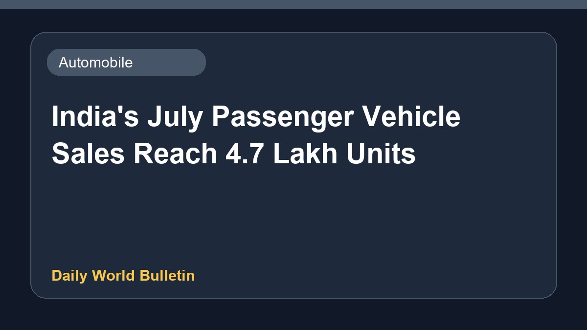

India's July Passenger Vehicle Sales Reach 4.7 Lakh Units

India registered total passenger vehicle sales of 4.7 lakh units in July, according to recent automotive sector updates. Leading the market, Maruti Suzuki alone retailed over two lakh cars during the month. This performance highlights steady consumer demand across the country for passenger vehicles. Industry observers continue to monitor monthly sales figures to gauge broader economic trends and sector growth.
Original source: Automobile News Sources
India's Passenger Vehicle Sales In July Hit 4.7 Lakh, Maruti Suzuki Alone Sells Over 2 Lakh Cars - ETV Bharat ↗
India's Passenger Vehicle Sales In July Hit 4.7 Lakh, Maruti Suzuki Alone Sells Over 2 Lakh Cars - ETV Bharat ↗